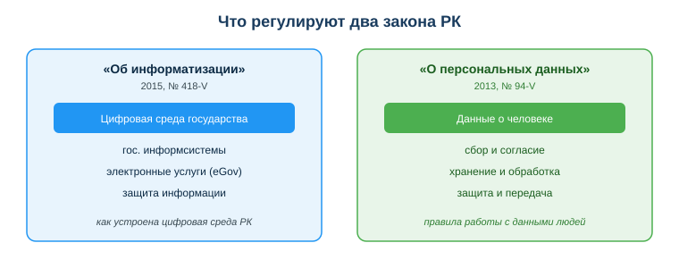
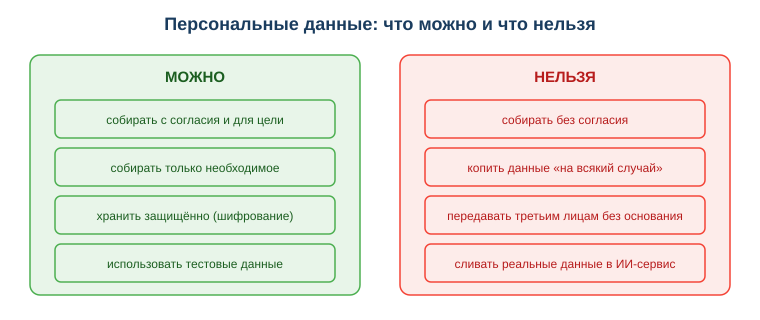

Изучить законы РК «Об информатизации» и «О персональных данных»
Практическая ситуация
Ты пишешь приложение, которое собирает имена, телефоны и ИИН пользователей. Можно ли хранить их где угодно? Передавать третьим лицам? Отправить таблицу в зарубежный ИИ-сервис «чтобы быстро обработать»? Кажется, что это технический вопрос. На самом деле — правовой.
Ответ дают законы РК. И за их нарушение отвечает не «приложение», а разработчик и компания. Этот урок — про правовые рамки работы с информацией в Казахстане: какие два закона задают правила и как не нарушить их в своём проекте.

Что ты научишься делать
- называть, что регулируют два ключевых ИТ-закона РК;
- определять, какие сведения являются персональными данными;
- применять принципы согласия, минимизации и защиты при сборе данных;
- отличать допустимые действия с данными от нарушений.
Почему это важно
Любое приложение, которое работает с людьми, собирает их данные: при регистрации, заказе, записи на услугу. Если делать это «как удобно», легко нарушить закон, получить штраф и потерять доверие пользователей. Знание правил защищает и пользователя, и тебя как разработчика.
Связь с профессией: разработчик закладывает работу с данными прямо в код — какие поля собирать, где хранить, кому передавать. Поэтому он обязан знать правовые рамки не хуже технических: правильная форма сбора данных начинается не с верстки, а с закона.
Учимся читать схему
Посмотри на схему «Что регулируют два закона РК» выше. Ответь на вопросы:
- какой из двух законов описывает работу государственных сервисов и eGov, а какой — работу с данными человека?
- к какому закону относится правило «собирать данные только с согласия»?
- если приложение хранит ИИН и телефоны клиентов, требования какого закона ты обязан соблюдать в первую очередь?
Главное понятие
Персональные данные — сведения, относящиеся к конкретному человеку: ФИО, ИИН, дата рождения, адрес, телефон, e-mail, фото, биометрия. Среди них есть данные ограниченного доступа (например, о здоровье) — к ним требования строже.
Проще: если по записи можно понять, о ком именно идёт речь, — это персональные данные, и закон защищает их.
Два ключевых закона
| Закон | О чём | Что важно разработчику |
|---|
| «Об информатизации» (2015, № 418-V) | государственные информсистемы, электронные услуги, защита информации | как устроена цифровая среда и госуслуги РК |
| «О персональных данных и их защите» (2013, № 94-V) | сбор, хранение, обработка персональных данных | правила работы с данными пользователей |
Первый закон отвечает на вопрос «как устроена цифровая среда государства», второй — «как обращаться с данными конкретных людей». В работе с пользователями чаще всего применяется именно второй.
Базовые правила обработки данных
- Согласие. Собирать данные можно с согласия человека и только для конкретной, заранее названной цели.
- Минимизация. Собирать только то, что реально нужно для этой цели, без полей «на всякий случай».
- Защита. Хранить безопасно: шифрование, ограничение доступа, резервные копии.
- Ограничение передачи. Не передавать данные третьим лицам и в сторонние сервисы без основания и согласия.

Эти четыре правила — основа любой корректной работы с данными. Нарушение хотя бы одного уже создаёт правовой риск.
Мини-кейс
Команда отправила таблицу с ИИН и телефонами клиентов в публичный ИИ-сервис «чтобы быстро обработать данные». Это передача персональных данных без согласия и без контроля над тем, где они окажутся, — нарушение закона. Правильный следующий шаг: обезличить данные (убрать ИИН и имена) или обрабатывать их локально, не выгружая во внешний сервис.
Разбор типичной ошибки
Ошибка. «Это же учебный проект, можно тестировать на реальной базе клиентов знакомого».
Почему это ошибка. Закон не делает исключений для учебных проектов: обработка чужих персональных данных без согласия — это нарушение независимо от цели.
Как правильно. Использовать тестовые или обезличенные данные, а реальную базу — только с согласия людей и для конкретной задачи.
Практика
Ответь письменно:
- Для формы «запись на консультацию» перечисли поля, которые действительно нужны, и одно поле, которое будет избыточным. Объясни выбор через принцип минимизации.
- Опиши, что не так в ситуации мини-кейса и как исправить обработку данных, не нарушая закон.
Образец (часть ответа на пункт 1): «Нужны: имя, контакт для связи, желаемое время — этого достаточно для цели "записать на консультацию". Избыточно поле "уровень дохода": оно не нужно для записи, а его сбор нарушает принцип минимизации и повышает риск при утечке».
Самопроверка
- Я знаю, что регулируют законы «Об информатизации» и «О персональных данных».
- Я умею определять, какие сведения являются персональными данными.
- Я понимаю и могу применить правила согласия, минимизации и защиты.
Подумай
- Какими своими персональными данными ты делишься с приложениями каждый день и какие из них действительно нужны сервису?
- Почему разработчику выгоднее собирать меньше данных, а не больше — что он теряет и что выигрывает?
Итог
Что теперь делать:
- помни: «Об информатизации» — для цифровой среды государства, «О персональных данных» — для работы с данными людей;
- определяй персональные данные и особо защищай данные ограниченного доступа;
- собирай данные с согласия, по минимуму и храни их защищённо;
- не передавай чужие данные третьим лицам и в сторонние сервисы без основания — отвечает разработчик и компания.
Полезные ссылки
Источник: Закон РК «Об информатизации» (№ 418-V); Закон РК «О персональных данных и их защите» (№ 94-V); ГОСО ТиПО; DigComp 2.2 (компетенции работы с данными).
Разработал: преподаватель ИКТ, магистр управления и информационной безопасности Калиаскаров Д.А.
Материал одобрен к использованию в обучении решением Педагогического совета ТОО «Колледж Хекслет Казахстан».